CRM for WhatsApp
A multi-tenant WhatsApp CRM you run as your own SaaS: a shared team inbox, contacts and deals, bulk campaigns, a no-code chatbot builder and an AI assistant, on the official WhatsApp Cloud API or a WhatsApp number connected by QR code, with plans and online payments built in.
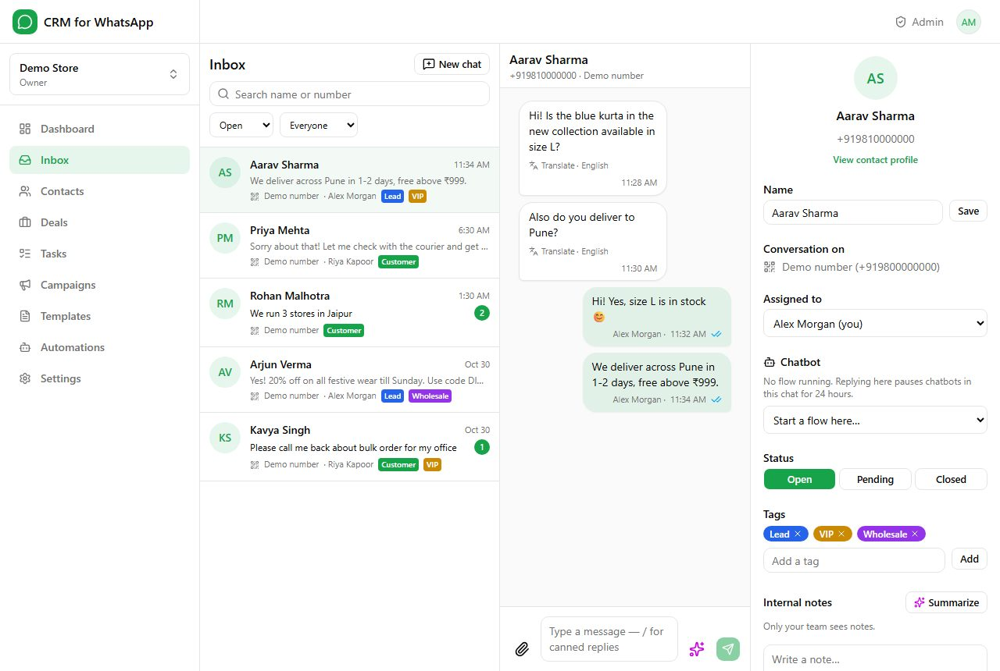
The team inbox with the demo data that the installer can add.
CRM for WhatsApp is free and open source under the MIT licence. This guide takes you from an empty server to a running platform. If something isn't covered here, see Support.
Features at a glance
- Two ways to connect WhatsApp, chosen per number: Meta's official Cloud API, or any WhatsApp number by scanning a QR code (with warm-up, pacing and daily limits to lower the ban risk).
- Team inbox in real time: assignment, internal notes, tags, quick replies, media, read receipts, typing/viewing indicators, 24-hour window handling and approved templates.
- CRM: contacts with custom fields, CSV import/export, segments, consent tracking, a drag-and-drop deals pipeline, tasks with reminders and a contact timeline.
- Campaigns: Meta templates (sync, create and submit for approval) or free text with spintax on QR numbers, scheduling, throttled sending and live delivery reports.
- Chatbot flow builder: menus, questions with validation, conditions, delays, assignment, tags, deals, webhooks and AI replies; keyword, first-message and campaign-reply triggers.
- AI assistant (each workspace connects its own OpenAI, Gemini or Claude key): reply suggestions, rewrite, translation, chat summaries and auto-replies from a knowledge base.
- REST API and signed webhooks for every workspace.
- SaaS billing: plans with limits and features, trials, Stripe, Razorpay, PayPal and bank transfer, coupons, taxes and invoices.
- Super-admin panel: workspaces, plans, payments, "view as owner", branding, email templates and SMTP.
- White label (app name, logo, colour, favicon) and translation-ready (all text in one file, right-to-left supported).
Requirements
| Item | Minimum | Notes |
|---|---|---|
| Server | 2 GB RAM, 2 vCPU | A Linux VPS (Ubuntu 22.04/24.04 recommended). Shared hosting without Node.js is not supported. |
| Node.js | 20.9 or newer | Node 22 LTS recommended. Not needed with Docker. |
| PostgreSQL | 14 or newer | Included in the Docker setup. |
| Domain + HTTPS | required for production | Meta only sends webhooks to HTTPS addresses. |
| Outgoing email (SMTP) | recommended | For verification, password reset, invitations and billing emails. Without it, emails are saved in storage/mail-outbox. |
The app runs as two processes: the web app (pages, API, realtime) and the worker (campaigns, QR connections, chatbot timers, reminders, billing). Both setups below start both.
Installation
Download or clone the repository (git clone https://github.com/epifive/whatsapp-crm.git). The repository folder is the application; upload its contents to your server (for example to /var/www/wa-crm).
Option A — Docker (recommended)
Needs Docker with the Compose plugin. PostgreSQL, the web app and the worker start together.
- In the application folder, create the settings file:
Set these three values (leave the rest):cp .env.example .env nano .envPOSTGRES_PASSWORD="a-long-random-password" APP_KEY="paste the output of: openssl rand -base64 32" APP_URL="https://crm.yourdomain.com" - Start everything:
docker compose up -d --build - Point your domain to the server and put Nginx with HTTPS in front of port 3000 (see Nginx), or open
http://SERVER-IP:3000to try it. - Open your address in the browser: the web installer starts. The database step is already filled in from Docker.
APP_KEY safe and never change it: it signs logins and encrypts stored secrets (WhatsApp tokens, API keys, payment keys). Changing it logs everyone out and makes those secrets unreadable.Option B — VPS with PM2 and Nginx
Example for Ubuntu 22.04/24.04, as a user with sudo.
- Install Node.js 22, PostgreSQL and Nginx:
curl -fsSL https://deb.nodesource.com/setup_22.x | sudo -E bash - sudo apt-get install -y nodejs postgresql nginx sudo npm install -g pm2 - Create the database and its user:
sudo -u postgres psql -c "CREATE USER wacrm WITH PASSWORD 'a-long-random-password';" sudo -u postgres psql -c "CREATE DATABASE wa_crm OWNER wacrm;" - Install and build the app (in the uploaded application folder):
cd /var/www/wa-crm npm ci npm run build - Start the web app and the worker, and keep them running after reboots:
pm2 start ecosystem.config.cjs pm2 save pm2 startup # run the command it prints - Nginx and HTTPS: copy
deploy/nginx.confto/etc/nginx/sites-available/wa-crm, replacecrm.example.comwith your domain, then:
The config forwards websockets (needed for the realtime inbox) and allows 25 MB uploads.sudo ln -s /etc/nginx/sites-available/wa-crm /etc/nginx/sites-enabled/ sudo nginx -t && sudo systemctl reload nginx sudo apt-get install -y certbot python3-certbot-nginx sudo certbot --nginx -d crm.yourdomain.com - Open
https://crm.yourdomain.com: the web installer starts.
The web installer
Until the app is installed, every page leads to /install. Once it's done, the installer closes itself.
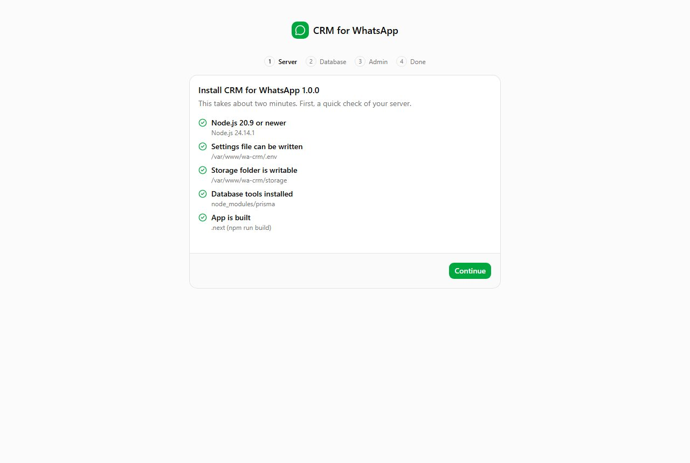
1. Server check: Node version, writable folders, build.
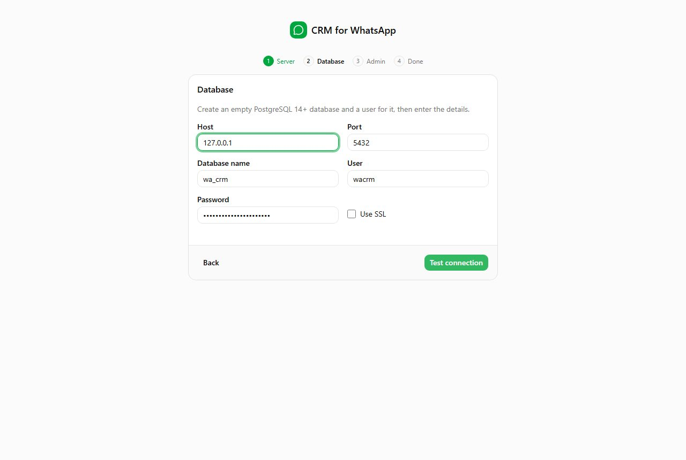
2. The PostgreSQL database (skipped with Docker).
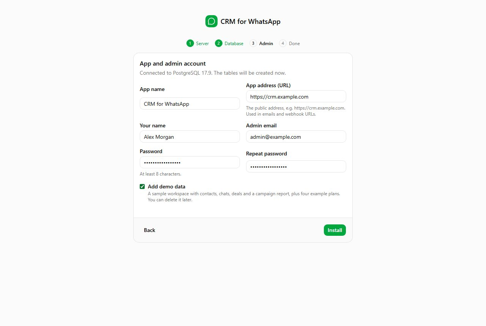
3. App name, the app's address, your admin account and optional demo data.
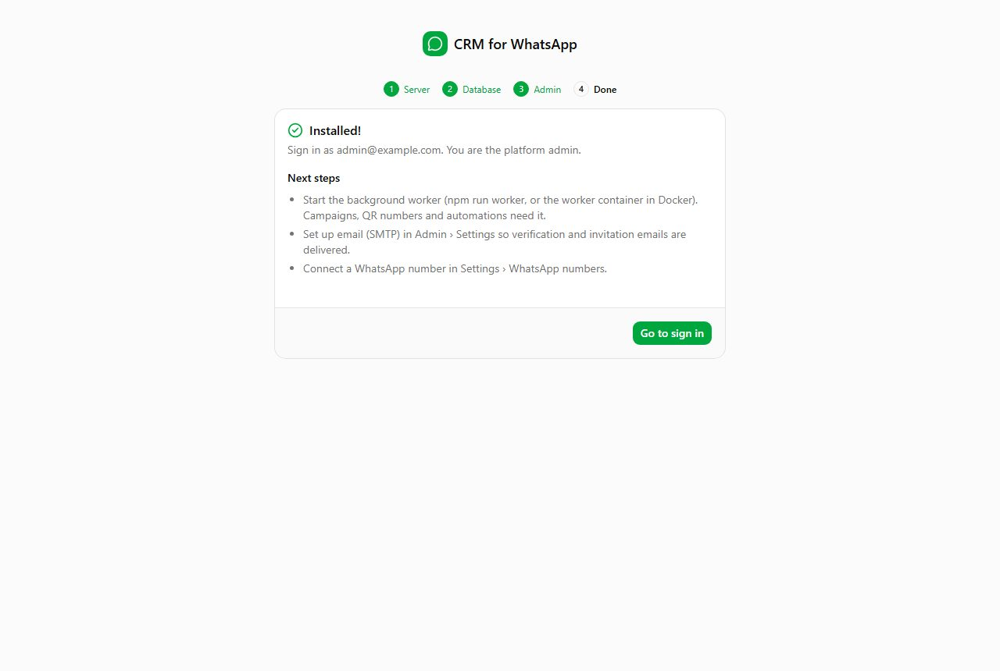
4. Done. The installer created the tables, your platform admin and the settings file (.env).
Demo data adds a "Demo Store" workspace (40 contacts, chats, deals, tasks, a campaign report, a chatbot flow and an AI knowledge base) plus four example plans. Billing stays off until you turn it on. The demo is a separate workspace, so it never mixes with your own data; switch between workspaces with the menu at the top left.
Command-line setup (alternative)
If you prefer not to use the web installer, write .env yourself (see .env.example), then:
npx prisma migrate deploy
npm run create-admin -- --email you@example.com --name "Your Name" --password "a-strong-password"
npm run seed:demo # optional demo datacreate-admin also marks the app as installed.
First steps after installing
- Sign in with the admin account. You're the platform admin (the "Admin" link at the top) and the owner of your first workspace.
- Check the worker: Admin › Overview shows whether it's online.
- Email: Admin › Settings › Email (SMTP), then "Send test email".
- Branding: Admin › Settings › Branding: app name, logo, colour and favicon.
- Connect WhatsApp: Settings › WhatsApp numbers (see below).
- Selling plans? Set up billing. Running it for one business? Leave billing off: every workspace is then unlimited.
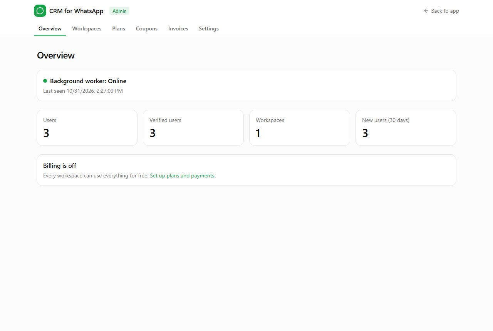
Connecting WhatsApp
Each workspace can connect several numbers, each one either through the official Cloud API or by QR code. Everything else (inbox, campaigns, flows, AI, API) works the same on both.
| Official Cloud API | QR code | |
|---|---|---|
| Setup | Meta developer app (about 15 minutes, once) | Scan a QR code with the phone |
| Messages outside 24 h | Approved templates only | Any message (paced by the anti-ban engine) |
| Buttons and lists | Native WhatsApp buttons/lists | Numbered text menus |
| Costs | Meta's per-conversation prices, billed to your Meta account | None |
| Ban risk | None when you follow Meta's policies | Possible (unofficial); see below |
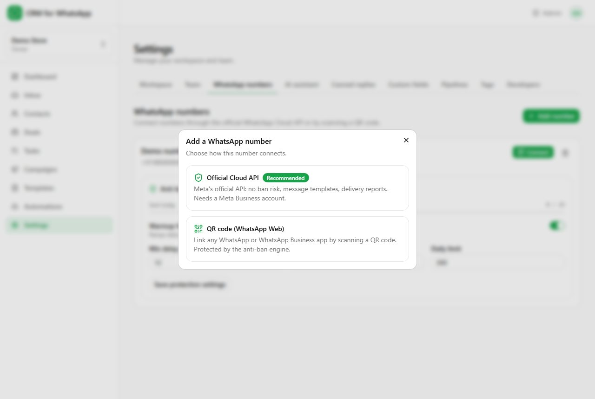
Official WhatsApp Cloud API
- Go to developers.facebook.com/apps › Create app › type Business, and link your Meta Business account.
- In the app, add the WhatsApp product. Under WhatsApp › API Setup, add and verify your business phone number. Copy the Phone number ID and the WhatsApp Business Account ID.
- Create a permanent access token: Business Settings › Users › System users › Add (role Admin) › Add assets: your app (full control) and your WhatsApp account (full control) › Generate new token with the permissions
whatsapp_business_messagingandwhatsapp_business_management. Copy the token. - Copy the App secret from App settings › Basic.
- In the CRM: Settings › WhatsApp numbers › Add number › Official Cloud API, and paste the four values. The app checks them with Meta and subscribes to your WhatsApp account.
- The number's page then shows a Callback URL and a Verify token. In Meta: WhatsApp › Configuration › Webhook › Edit, paste both, click Verify and save, then Manage and subscribe to the
messagesfield (andmessage_template_status_updatefor template approvals). - Send a WhatsApp message to the number: it appears in the inbox. Templates: Templates › Sync from Meta, or create new ones and submit them for approval.
X-Hub-Signature-256).QR connection and the anti-ban engine
Settings › WhatsApp numbers › Add number › QR code (WhatsApp Web), then on the phone: WhatsApp › Linked devices › Link a device, and scan. The worker keeps the connection and reconnects by itself; the session is stored encrypted in the database.
Every message sent from a QR number (replies, campaigns, flows, API) goes through the anti-ban engine:
- Warm-up: a new number may send 25, 50, 125, 125, 250 and 250 messages on its first six days, then its own daily limit (300 by default, adjustable per number).
- Pacing: a random pause between messages (12–30 seconds by default) and a "typing…" indicator.
- Spintax
{Hi|Hello|Hey}so bulk messages aren't identical, and personalisation with{{first_name}}and custom fields. - Opt-outs: a contact who replies STOP is never messaged again by campaigns.
Using the app
Team inbox
All chats from all numbers in one place, updated live. Filter by status, assignee and number; assign chats; add internal notes; use / for quick replies; send media; reply to a message; see delivered/read ticks. On Cloud API numbers, the composer switches to approved templates when the 24-hour window is closed. The right panel shows the contact, tags, notes, the running chatbot and AI tools.
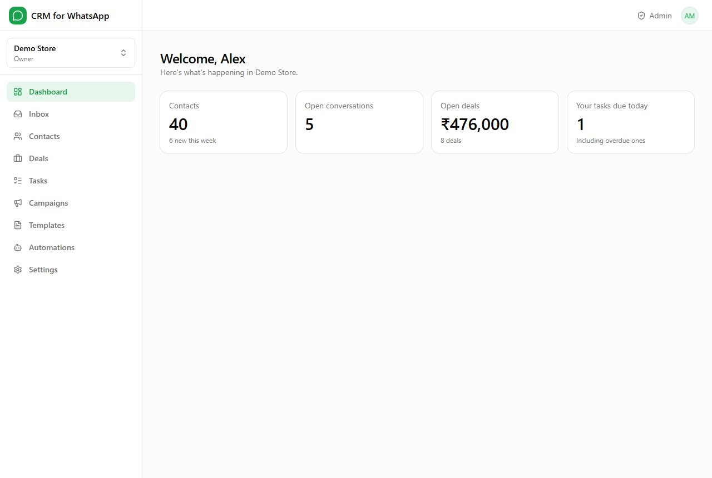
Dashboard and getting-started checklist.
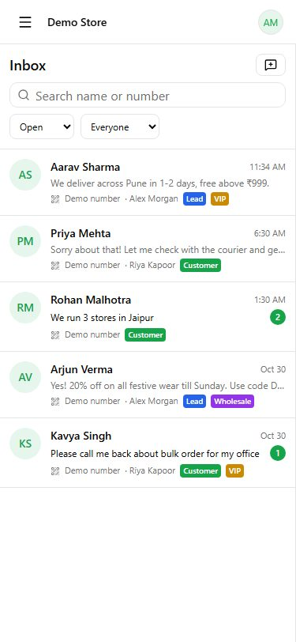
Works on phones too.
Contacts, deals and tasks
- Contacts: custom fields (Settings › Custom fields), tags, owner, consent (opt-in/opt-out) and a timeline of everything that happened. Import a CSV with column mapping, export the current list.
- Segments: saved filters (tags, fields, consent, last message, deals…) used by campaigns.
- Deals: Kanban pipelines with stages, values and win probability (Settings › Pipelines). Drag deals between stages.
- Tasks: due dates, assignees and reminders (in the app and by email).
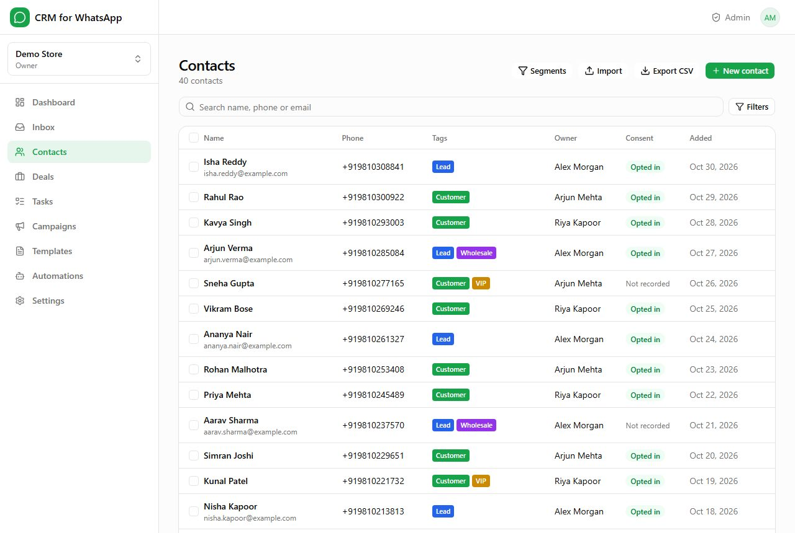
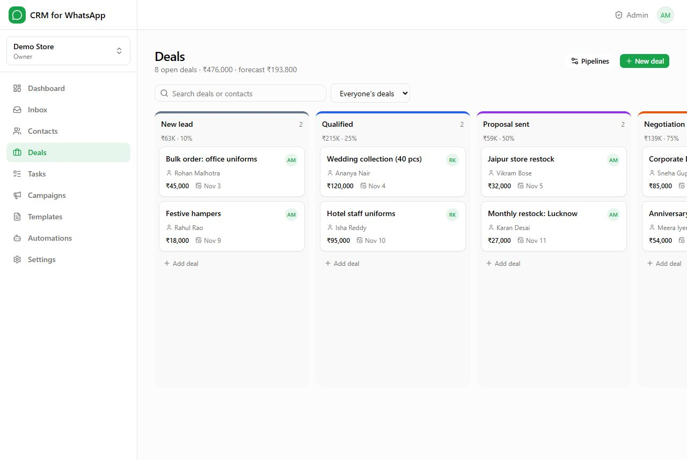
Templates and campaigns
A campaign sends one message to an audience: all contacts, a segment or tags, optionally only opted-in contacts. Cloud API numbers send an approved template (map each {{1}} to a contact field); QR numbers send text or media with spintax. Send now or schedule; pause, resume, cancel and retry failed messages. The report shows sent, delivered, read, replied and failed per recipient.
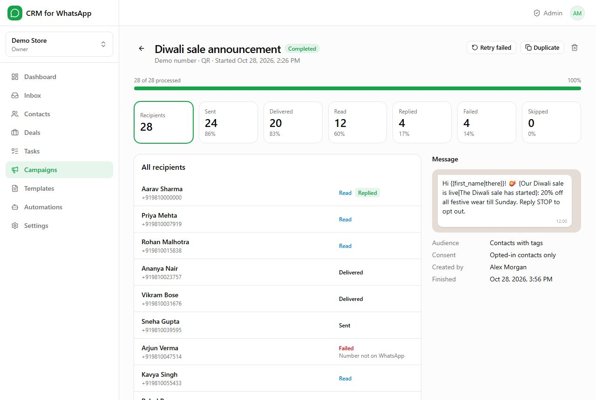
Chatbot flows
Automations › New flow, then drag steps onto the canvas and connect them. A flow starts on a keyword, on a contact's first message, on any message, or when someone replies to a campaign. When a teammate replies in the chat, the bot pauses for 24 hours.
| Step | What it does |
|---|---|
| Send message | Text and/or media, with variables like {{first_name}}. |
| Menu | Up to 3 buttons or a list of up to 10 options (numbered text on QR numbers). |
| Ask a question | Text, number, email, phone, date or yes/no, validated and saved to a variable or contact field. |
| Condition | Branch on variables and contact data. |
| Wait | Minutes, hours or days. |
| Assign chat / Tags / Update contact / Create deal | CRM actions. |
| Webhook | Sends the conversation data (signed) to your server; its answer can set variables. |
| AI reply | Answers from the knowledge base, optionally for several turns, with a hand-over path. |
| End | Optional closing message; can close the chat. |
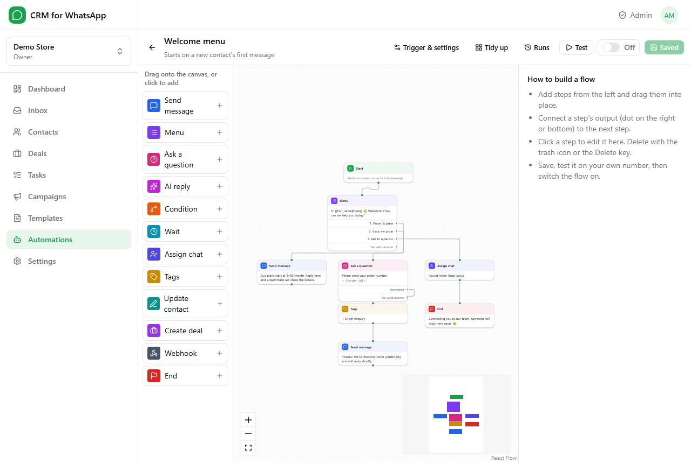
AI assistant
Each workspace connects its own AI account in Settings › AI assistant: OpenAI, Google Gemini or Anthropic Claude. The provider bills that account directly; the platform never pays for AI. Then:
- Inbox: ✨ suggest a reply, rewrite (improve, shorter, friendlier, formal), translate the draft or a customer's message, summarise the chat and save it as a note.
- Auto-reply: when no chatbot handles a message, the AI answers from the knowledge base; if it can't, the chat goes to the team.
- Knowledge base: plain-text articles (prices, delivery, policies, FAQs) the AI answers from.
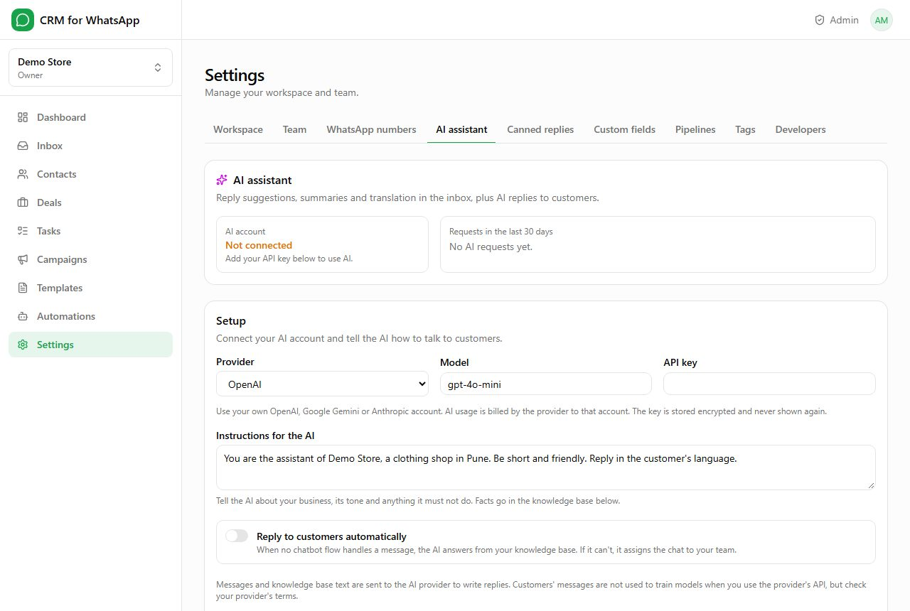
REST API
Settings › Developers › New API key. Send it as Authorization: Bearer wacrm_…. Limit: 120 requests per minute per key.
| Endpoint | Description |
|---|---|
GET /api/v1/accounts | The workspace's WhatsApp numbers. |
GET /api/v1/contacts?phone=&q=&cursor= | Find or list contacts. |
POST /api/v1/contacts | Create or update a contact by phone (name, email, fields, tags, opted_in). |
GET / PATCH /api/v1/contacts/:id | Read or update one contact. |
POST /api/v1/messages | Send text, media_url or a template to to (optionally from account_id). |
GET /api/v1/messages/:id | Delivery status of a message. |
POST /api/v1/flows/:id/start | Start a chatbot flow for a phone number, with variables. |
curl -X POST https://crm.yourdomain.com/api/v1/messages \
-H "Authorization: Bearer wacrm_your_key" -H "Content-Type: application/json" \
-d '{"to": "+919000012345", "text": "Your order has shipped 🚚"}'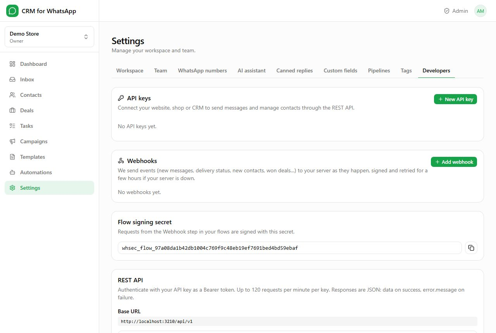
Webhooks
Settings › Developers › Add webhook. Events: message.received, message.status, contact.created, deal.stage_changed, deal.won, flow.completed, campaign.completed. Each POST has the headers X-WACRM-Event, X-WACRM-Delivery, X-WACRM-Timestamp and X-WACRM-Signature. Failed deliveries are retried with back-off. Verify the signature like this (Node.js):
const crypto = require("crypto");
function isValid(rawBody, headers, secret) {
const expected = "sha256=" + crypto.createHmac("sha256", secret)
.update(`${headers["x-wacrm-timestamp"]}.${rawBody}`).digest("hex");
return crypto.timingSafeEqual(Buffer.from(expected), Buffer.from(headers["x-wacrm-signature"]));
}SaaS and billing
Billing is off after installation: every workspace can use everything. To sell plans:
- Admin › Plans: create your plans (the demo data includes four to start from).
- Admin › Settings › Billing: currency, the plan new workspaces start on (with its free trial), grace period, reminder days, tax and your company details for invoices. Tick Billing on.
- Turn on at least one payment gateway.
Plans and limits
Each plan has a monthly and/or yearly price (0 = not sold that way; both 0 = free plan), a free trial, limits and features:
| Limits | Features (on/off) |
|---|---|
| WhatsApp numbers · team members (pending invitations count) · contacts · campaigns per month · chatbot flows (use Unlimited for no limit) | Official Cloud API · QR connection · campaigns · chatbot flows · AI assistant · REST API · webhooks |
Limits are checked when something is added; existing data is never deleted. When a period ends unpaid, the workspace keeps working for the grace period, then becomes read-only: everything stays visible and exportable and incoming chats still arrive, but sending, campaigns and automations pause until it renews. Customers get emails before a trial ends, before renewal, when payment is due and when the workspace becomes read-only.
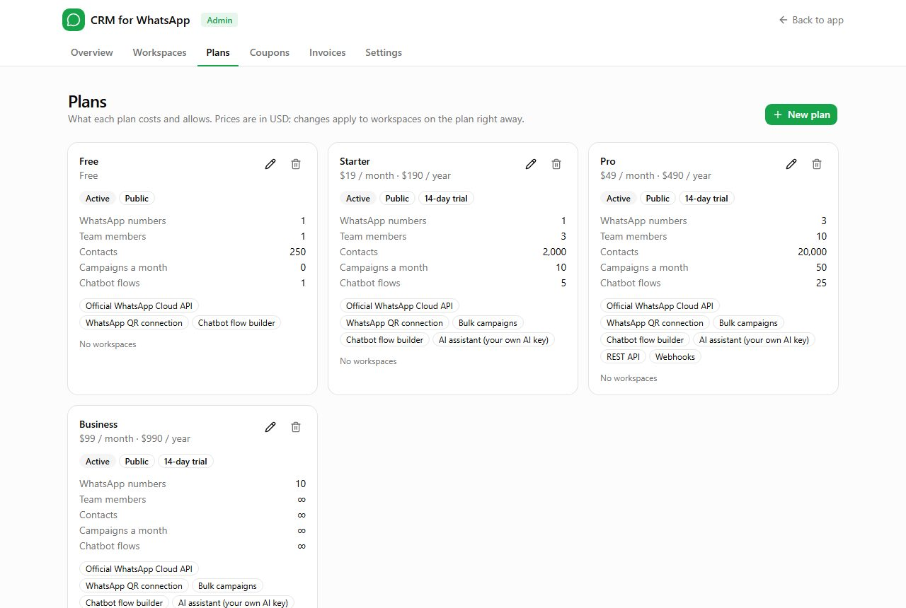
Payment gateways
Customers pay for one period at a time (monthly or yearly) and renew from Settings › Billing; paying early adds the new period after the current one. Configure the gateways in Admin › Settings. Each card shows the webhook URL to copy.
| Gateway | What you need | Webhook |
|---|---|---|
| Stripe (cards worldwide) | Secret key (sk_live_…) from Developers › API keys | Developers › Webhooks › Add endpoint, event checkout.session.completed; paste the signing secret (whsec_…). |
| Razorpay (UPI, cards, netbanking in India) | Key ID and Key secret from Account & Settings › API keys | Account & Settings › Webhooks, event payment.captured, with a secret you choose. |
| PayPal | Client ID and secret of a REST app (sandbox or live) | In the app: Webhooks › Add, events Checkout order approved and Payment capture completed; paste the Webhook ID. |
| Bank transfer | Your bank/UPI details | Customers enter the transfer reference; you confirm it in Admin › Invoices. |
Payments are confirmed both when the customer comes back from the payment page and by the webhook, so a closed browser tab still activates the plan. The amount paid is checked against the invoice. Coupons (Admin › Coupons) give a percentage or fixed discount, optionally limited to plans, a number of uses and an end date. Every payment gets a numbered invoice the customer can print or save as PDF.
Managing workspaces
Admin › Workspaces lists every workspace with its plan, status and usage. On a workspace you can put it on a plan until a date (e.g. a deal agreed outside the app), give a trial, make it read-only, suspend it with a reason, and View as owner to help a customer: a purple bar shows you're viewing as them, it ends after two hours, and start and stop are recorded in the audit log.
Platform settings
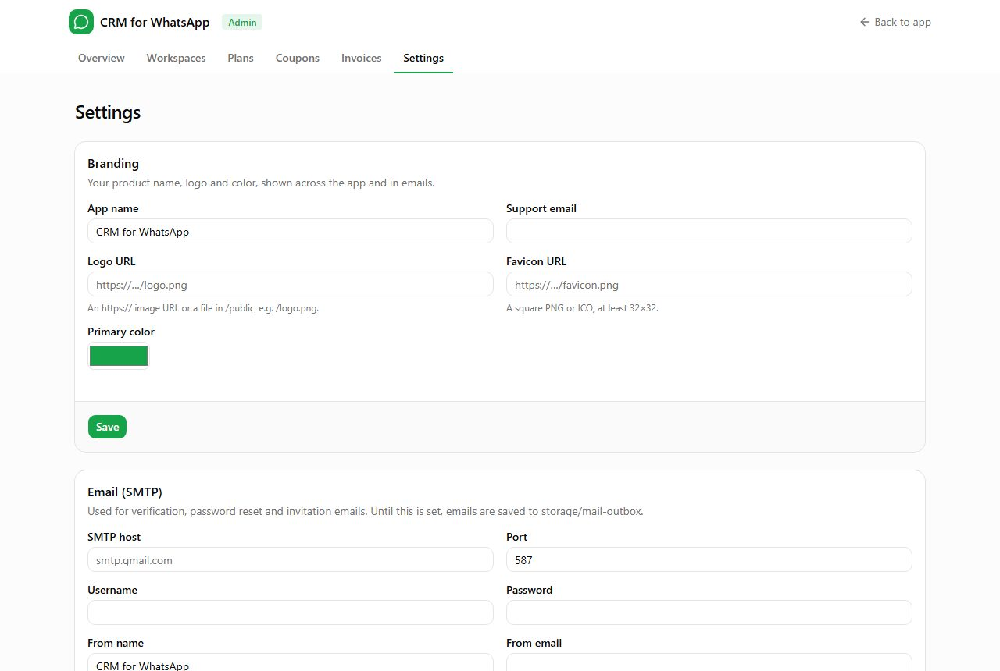
- Branding: app name, logo, favicon, main colour, support email (also used in emails).
- Email (SMTP): any SMTP server (Gmail/Google Workspace with an app password, Amazon SES, Mailgun, Brevo…).
- Billing and gateways: see above.
- Email templates: change the subject, heading, text and button of every email, with placeholders like
{{name}},{{workspace}}and{{app_name}}. Empty fields use the built-in text.
Translations
All interface text is in messages/en.json. To add a language:
- Copy
messages/en.jsontomessages/<code>.json(e.g.hi.json) and translate the values (keep the keys and the{placeholders}). - Add the code to
LOCALESinsrc/i18n/config.ts(and toRTL_LOCALESfor right-to-left languages such as Arabic or Urdu). - Rebuild:
npm run build, then restart.
Running a public demo
To show the platform to your own customers before they sign up, run a separate copy of the app in demo mode. Visitors sign in with one click as the platform admin, a workspace owner or an agent and can try everything; the data is rebuilt every few hours.
- Install a second copy on its own database, as usual.
- Add to its
.env:DEMO_MODE=true(and optionallyDEMO_RESET_HOURS=3, 1 to 24). - Run
npm run demo:resetonce, then restart the web app and the worker.
Demo accounts (password demo1234): admin@demo.test, owner@demo.test, agent@demo.test. In demo mode the app refuses whatever reaches outside the server or changes the platform: connecting WhatsApp numbers, test messages, payments, emails (sign-up, invitations, password resets), AI keys, webhooks and the REST API, file uploads and all platform settings.
Updating to a new version
- Back up the database and the
storagefolder. - Replace the application files with the new version (
git pullor a fresh download). Keep your.envandstoragefolder. - Docker:
docker compose up -d --build. PM2:npm ci npx prisma migrate deploy npm run build pm2 restart all
Database changes are applied by the migrations and never delete your data.
Backups
Back up two things regularly: the PostgreSQL database and the storage folder (uploaded media, the install lock), plus your .env once.
# database (PM2 setup)
pg_dump -U wacrm -h 127.0.0.1 wa_crm | gzip > wa_crm-$(date +%F).sql.gz
# database (Docker setup)
docker compose exec -T postgres pg_dump -U wacrm wa_crm | gzip > wa_crm-$(date +%F).sql.gzTroubleshooting and FAQ
Campaigns stay "running", QR numbers don't connect, flows don't continue after a wait
The worker isn't running. PM2: pm2 status and pm2 logs wa-crm-worker. Docker: docker compose logs worker. Admin › Overview shows when it last checked in.
Meta says the callback URL couldn't be verified
The app must be reachable over HTTPS with a valid certificate, and the verify token must be copied exactly from the number's page. Check that APP_URL in .env is your public HTTPS address.
No messages arrive from the Cloud API
In Meta's WhatsApp › Configuration, make sure the messages webhook field is subscribed, and that the App secret saved in the CRM is current (the signature check fails otherwise).
Emails don't arrive
Set up SMTP in Admin › Settings and use "Send test email". Until then, emails are saved in storage/mail-outbox.
The realtime inbox doesn't update
Your proxy must forward websockets: use the Upgrade/Connection headers from deploy/nginx.conf.
I forgot the admin password
Use "Forgot password" on the sign-in page, or on the server: npm run create-admin -- --email you@example.com --password "new-password".
Can I run it for my own business only?
Yes: leave billing off. Every workspace is then unlimited and nobody is asked to pay.
Where are payments and AI usage billed?
Plan payments go to your Stripe/Razorpay/PayPal account. WhatsApp Cloud API conversations are billed by Meta to the business that owns the WhatsApp account. AI usage is billed by the AI provider to each workspace's own key.
Changelog
Version 1.0.0 — initial release
- Official WhatsApp Cloud API and QR connections with the anti-ban engine.
- Realtime team inbox, contacts, segments, CSV import/export, deals, tasks.
- Templates and campaigns with reports; chatbot flow builder; REST API and webhooks.
- AI assistant with each workspace's own OpenAI, Gemini or Claude key.
- SaaS billing with Stripe, Razorpay, PayPal and bank transfer; super-admin panel.
- Web installer, demo data, a live demo mode, Docker and PM2 setups.
Credits
Built with open-source software, each under its own license (MIT unless noted): Next.js, React, Prisma, PostgreSQL driver pg, pg-boss, Socket.IO, Baileys, React Flow (@xyflow/react), Base UI, shadcn/ui, Tailwind CSS, Lucide icons (ISC), next-intl, Zod, dnd-kit, Nodemailer (MIT-0), Papa Parse, qrcode, Sonner, pino. "WhatsApp" is a trademark of Meta Platforms, Inc.; this product isn't affiliated with or endorsed by Meta.
Support
Please open an issue on GitHub and include the app version (the version in package.json) and what you see (screenshots and the worker/web logs help a lot). Bug reports and pull requests are welcome.
Need CRM for WhatsApp hosted for you, installed on your own server, or customised? Contact EpiFive.
CRM for WhatsApp is released under the MIT licence.